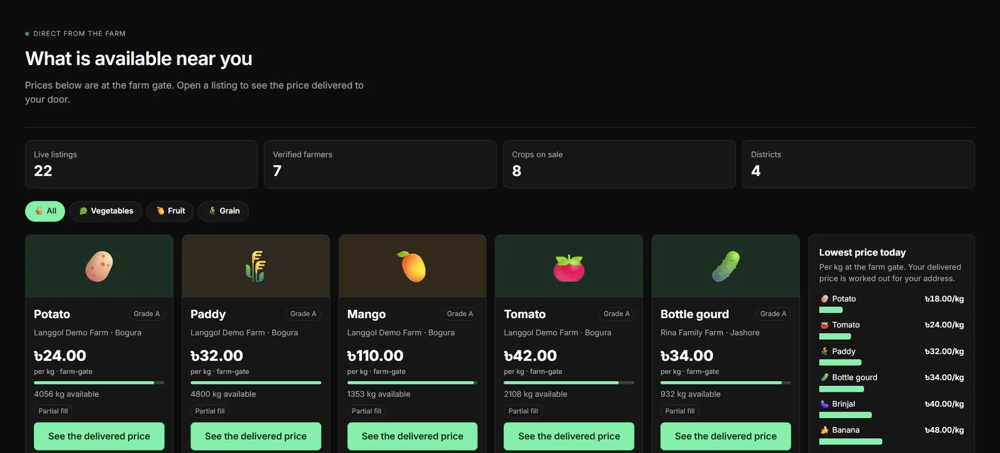
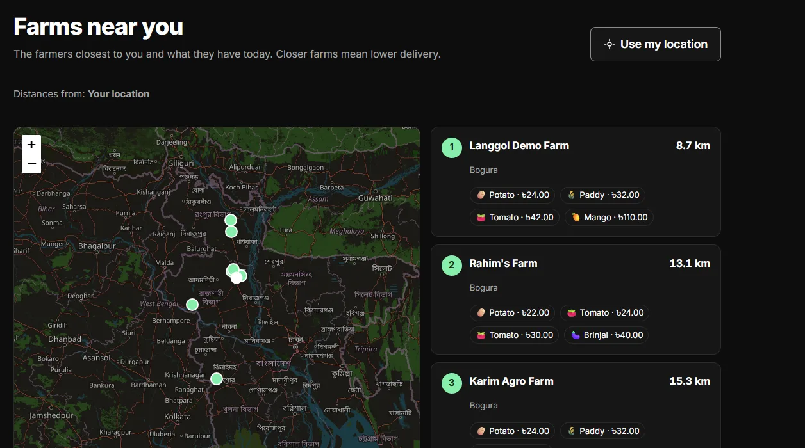
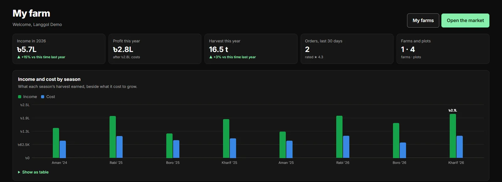
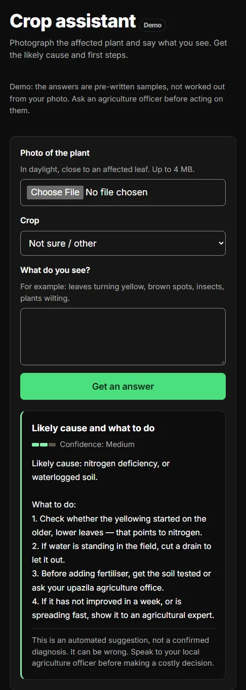

The farmer's share is a guess
For vegetables it is commonly reported at roughly 40–60% of what the consumer pays. Langgol treats that as a hypothesis to measure in the pilot district, not a fact to build a business on.
Agriculture · Bangladesh
Langgol connects farmers with buyers near them, prices every order at the buyer's door instead of the farm gate, and keeps the books to prove whether both sides came out ahead.
The problem
A tomato grown in Bogura usually changes hands five times before anyone eats it. Each hop adds transport, handling, commission and loss — and none of it is visible to the farmer or the buyer.
For vegetables it is commonly reported at roughly 40–60% of what the consumer pays. Langgol treats that as a hypothesis to measure in the pilot district, not a fact to build a business on.
Traders pay cash at the farm gate, take the whole lot, arrange transport and lend before harvest. Langgol removes unnecessary cost and opacity — not useful economic activity.
The lowest farm-gate price is often not the lowest price at the buyer's door. Distance, basket size, handling and spoilage decide that — and today nobody shows the sum.
The idea
Every listing on Langgol is priced to the buyer's address: produce, delivery, handling and commission, line by line. The buyer sees why one farm is cheaper than another, and the farmer sees exactly what reaches them.
Worked illustration · not measured data
A buyer in Bogura wants 5 kg. Farmer B is ৳5/kg cheaper at the farm gate, but 5 kg cannot pay for a 240 km round trip. At 500 kg on a shared route with a return load, the answer can flip. Langgol computes it, and shows the buyer why.
How it works
Scroll through one order. The model follows it.
1 · Farmer lists a harvest
Crop, grade, quantity and farm-gate price, from a phone, in Bangla. Photos matter more than text for a farmer who reads little English, so the screens are built around them.
The market and the Near me map sort farms by real distance from the buyer. A farm's demand is shown as counts only — never a buyer's name or address.
Produce, delivery, handling and commission are calculated for that buyer's address and shown line by line. The quote is frozen, so the price paid is the price seen.
The quantity is held the moment the buyer pays, so two buyers can never buy the same kilo. A double tap on a slow connection places one order, not two.
Every order moves through a strict set of states — accepted, picked up, delivered — and each move is recorded with who made it and when.
Payment is posted to a double-entry ledger. The farmer's share, delivery and commission are exact integers, and the order's economics are stored so the savings can be measured, not claimed.
The product
Screens from the running web app, with its demo data. Dark and bright themes, Bangla and English throughout.

The market. Live listings with farm-gate prices, grade and stock left. One button turns a farm-gate price into the price delivered to your address.

Near me. The closest farms on a map, sorted by distance, with what each has today. Closer farms mean lower delivery — so this is where cheaper starts.

My farm. Income, cost and harvest by Bangladeshi season — Aman, Rabi, Boro, Kharif — so a farmer can see which crop and season actually paid.

Crop assistant. A farmer photographs a sick plant and says what they see. The answer states its confidence and always points to the local agriculture officer before a costly decision. In the demo the answers are scripted, and say so.
Numbers
Demo data Ten invented people, their farms and six months of orders, placed through the real quote and checkout code. These show how Langgol accounts for money — they are not results from real farmers.
Every fulfilled demo order, added up. Exact to the poisha.
Delivery is large because the demo baskets are small. That is the point: on small orders, distance dominates the price — which is why Langgol prices delivered cost and matches buyers with the nearest farms.
What buyers paid, cancelled orders left out.
Tonnes, all demo farms, 2024–2026.
How it is built
Farmers will trust Langgol only if it pays them correctly, on time, every time. The engineering is organised around that.
Prices, stock and state changes are guarded by constraints in PostgreSQL itself, so a bug in the app cannot oversell or unbalance the books.
Identity numbers are encrypted, every admin action is in an append-only audit log, and buyer demand is shown as counts — never names.
A savings claim must trace to a stored price baseline, a method and a sample size. Without one, the product makes no claim at all.
Roadmap
A real farmer sells real produce to a real nearby buyer, with a transparent price, reliable delivery and a measurable benefit to both. Everything else grows from that.
Listings, delivered-price quotes, orders, ledger, verification, dashboards, map and the assistant demo.
Rajshahi is the default candidate. A go/no-go gate on measured farmer and buyer benefit decides what follows.
Shared routes and return loads to cut delivery cost; price and demand signals from real transactions.
Inputs, farm records and — last, through licensed partners — credit built on transaction history.
We are looking for pilot partners: farmer groups, field agents, retailers, restaurants and people who know a district's roads and markets.